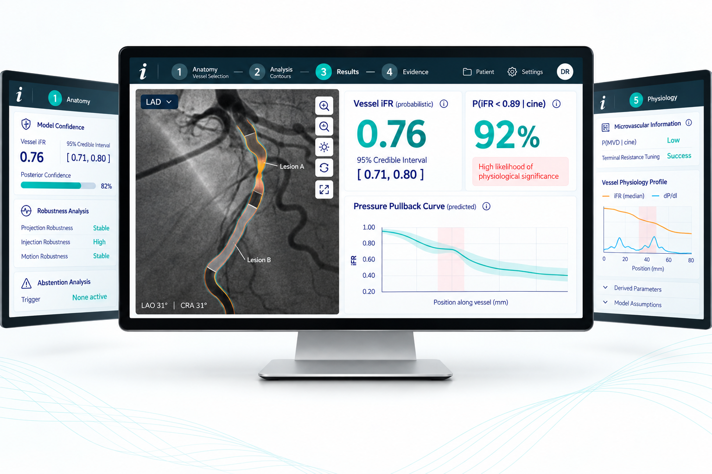

Virtual index
Estimate the physiological endpoint supported by the evidence — such as virtual FFR, iFR or RFR — with uncertainty.
Physiology Intelligence Platform
A unique solution for Indian cathlabs, that reconstructs coronary physiology indices FFR, iFR and RFR — with uncertainty and abstention built into the inference.

Abstention first · Drug free when possible · Wire Free
The clinical question
The goal is to identify when the acquisition supports virtual FFR/iFR or RFR.
Estimate the physiological endpoint supported by the evidence — such as virtual FFR, iFR or RFR — with uncertainty.
When angiography is not enough, identify invasive physiology as the next information source.
Do not collapse multiple compatible physiologies into one precise-looking number.
How it works
We combine anatomy, contrast transport and reduced physiological modelling, then quantify what the data can and cannot support.
Core idea. The model produces only what the available observations and parameters can justify.
About the team
Insiliqo is an independent research initiative bringing together subject-matter experts towards developing a medical device at the intersection of clinical cardiology, scientific computing and software engineering.
We work with clinical teams on retrospective, de-identified cath-lab data to investigate physiological questions and turn them into structured, reproducible evidence.
Research use only. Not validated, cleared or approved for patient care.
Collaborate with us
Bring the clinical question and retrospective cohort. We bring the modelling, compute and research workflow to investigate it.
Do not email angiograms, reports, patient names, UHID or other identifiable data. This is a research-stage medical device in development — not validated, cleared or approved for clinical use.